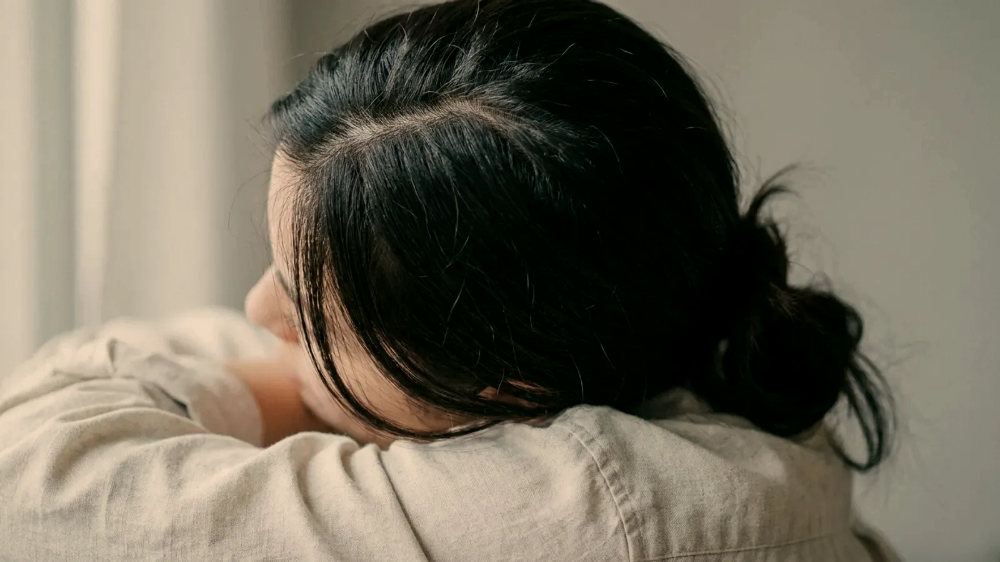
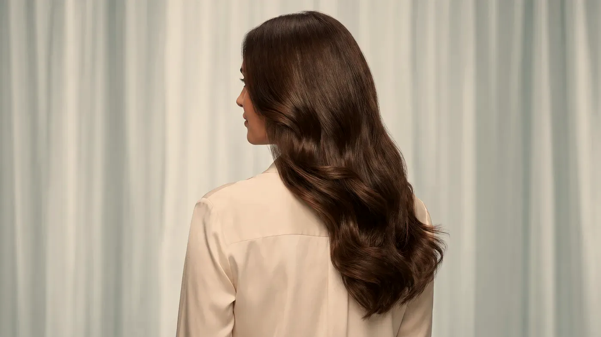

Bölge rehberi · Saçlı deri
Dökülen saçta ilk soru: neden?
Saç dökülmesi kalıtsal yatkınlıktan, geçirilen bir hastalık ya da doğumdan, demir eksikliğinden ya da tiroid bozukluğundan kaynaklanabilir. Aynada hepsi benzer görünür; oysa her birinin yolu farklıdır. Bu yüzden önce sizi muayene eder, öykünüzü dinler ve gerekirse tahlil isteriz; nedeni belli olmayan bir dökülmede seans serisine başlamayız.
Bakış açısı
Saçlı derideki işlemden önce neden tanı gerekir?
Saç dökülmesi tek başına bir hastalık adı değildir; arkasındaki bir sürecin dışa yansımasıdır. Aynı görüntünün altında birbirinden çok farklı nedenler yatabilir: aileden gelen yatkınlıkla ilerleyen androgenetik dökülme, ateşli bir hastalık ya da ağır stresin iki–dört ay ardından başlayan telogen effluvium, demir ve tiroid sorunları, saçlı derinin kendi hastalıkları ve iz bırakarak ilerleyen dökülmeler. Her birinin yolu ayrıdır.
Nedeni aranmadan başlanan bir seri iki şekilde zarar verir. Birincisi, kolayca düzeltilebilecek bir eksiklik gözden kaçar ve aylar boşa geçer. İkincisi, size uymayan bir seriyi bitirdiğinizde her yönteme olan inancınızı yitirirsiniz. Bu yüzden muayene ve öykü tamamlanmadan saçlı deriye yönelik bir uygulama planlamayız. Dökülme türlerini saç dökülmesi sayfasında ayrıntılı anlattık.
Katman katman bölge
En sık karşılaşılan dökülme türleri nelerdir?
Muayenede önce dökülmenin saçlı derinin neresinde yoğunlaştığına, ne zamandır sürdüğüne ve nasıl ilerlediğine bakarız. Aşağıda en sık karşılaştığımız türleri bulacaksınız; kimi kişide bunlardan birkaçı birlikte görülür.

Temsilî görsel · yapay zekâ ile üretildiAndrogenetik dökülme
Aileden gelen yatkınlıkla ortaya çıkar; saç telleri her döngüde biraz daha incelir ve kısalır. Erkeklerde alın hattı geriler ve tepe seyrelir; kadınlarda ise saçın ortadan ayrıldığı çizgi giderek genişler. Yıllar içinde yavaşça ilerlediği için plan da uzun soluklu yapılır.
Telogen effluvium
Yüksek ateşli bir hastalık, ameliyat, doğum, hızlı kilo kaybı ya da ağır bir stres döneminden iki–dört ay sonra başlayan, saçlı derinin her yerine yayılan geçici bir dökülmedir. Neden ortadan kalktıktan sonra birkaç ay içinde çoğu kişide dökülme kendi kendine azalır.
Eksiklikler, genel hastalıklar ve saçlı deri sorunları
Demir, B12 vitamini ya da tiroid hormonu dengesindeki bir sorun, saçın büyüme döngüsünü doğrudan bozar. Böyle bir tabloda önce eksiklik giderilir; eksiklik sürdükçe saçlı deriye yapılan hiçbir işlem beklenen katkıyı sağlamaz.
Seboreik dermatit, sedef, saçlı derinin mantar enfeksiyonu ve iz bırakarak ilerleyen dökülmeler çoğunlukla kaşıntı, kızarıklık ya da kepekle birlikte seyreder. Önce hastalığın kendisi tedavi edilir; iz bırakan bir dökülmeden şüpheleniliyorsa estetik amaçlı işlem yapılmaz.
Uygulama dizini
Saçlı deri için hangi seçenekler konuşulabilir?
Buradaki adımlar, dökülmenin nedeni bulunmuş ve uygun olduğu görülmüş kişilerde gündeme gelir. Her biri hekimin çizdiği ana planı destekleyen birer yardımcıdır, kendi başına bir çözüm değildir. Saç nakli ve öteki cerrahi yöntemler muayenehanede yapılmaz.
Saç mezoterapisi
YARDIMCIÇoğunlukla ertesi gün→Saç PRP
KENDİ KANINIZÇoğunlukla ertesi gün→Saçlı deride eksozom
YARDIMCIMuayenede belirlenir→Hekim muayenesi
BAŞLANGIÇAynı gün→Uygulama sonrası kontrol
TAKİPAylara yayılır→
Saç mezoterapisi
Saçlı derinin üst katmanına, vitamin, mineral ve aminoasit içeren karışımlar küçük noktalar hâlinde verilir; haftalar arayla bir seri olarak sürdürülür.
Sayfasına git →Akış
Saçlı deri için plan hangi adımlarla ilerler?
İlk görüşmede işlem yapılacağını varsaymayın. Saç dökülmesinde en yaygın yanlış, nedeni aramadan seanslara geçmektir.
- Muayene: dökülmenin ne zaman başladığı, saçlı derinin tamamına mı yoksa belli bir bölgeye mi yayıldığı, tellerin incelip incelmediği ve saçlı deride kızarıklık ya da kepek olup olmadığı incelenir.
- Öykü ve tahlil: ailenizdeki dökülme öyküsü, son altı ay içinde geçirdiğiniz hastalıklar ya da doğum, kullandığınız ilaç ve takviyeler not edilir. Gerekli görülürse kanınızdaki ferritin, tiroid hormonları ve bazı vitaminler ölçülür.
- Öncelikler: tahlilde bir eksiklik ya da muayenede bir hastalık çıkarsa ilk iş onu düzeltmektir; saçlı deriye yönelik destek bu tedavinin yanında yürütülür.
- Üçüncü ay kontrolü: uygun görülen uygulama seri hâlinde planlanır ve çoğunlukla üçüncü ayın sonunda yanıtına bakılır. Belirgin bir yanıt yoksa seriyi uzatmayız.
“Nedeni bilinmeyen bir dökülmede seriye başlamayız; uygulama, değerlendirmenin yerine değil ardından gelir.”
- Nedeni bulunmamış dökülme: muayene ve gerekli tahliller tamamlanmadan iğneyle yapılan bir işlem planlanmaz.
- Saçlı deride etkin enfeksiyon: mantar, kıl kökü iltihabı (folikülit) ya da açık yara varsa önce bu iyileşir.
- Kalıcı iz bırakan dökülme kuşkusu: deride kılsız, parlak ve sertleşmiş alanlar varsa estetik amaçlı işlem yapılmaz; önce ayırıcı tanı konur.
- Gebelik ve emzirme: bu süreçte iğneyle yapılan işlemlere başlanmaz.
- Kanama sorunu ya da kan sulandırıcı ilaç: saçlı deri bol kanlanan bir bölgedir; ilacınızda değişiklik gerekirse bu ancak ilacı veren hekimin onayıyla konuşulur.
- Plazma uygulamasına özel engeller: ağır kansızlık, düşük trombosit sayısı ve bazı kan hastalıklarında PRP seçilmez.
- Etkin kanser tanısı ya da tedavisi: tedavinizi yürüten hekimin görüşü alınmadan plan yapılmaz.
- Bilinen aşırı duyarlılıklar: lokal anestezik, antiseptik ya da daha önce denediğiniz bir karışıma verdiğiniz tepkiyi muayenede anlatın.
Muayenehanede yalnızca hekimimizin uzmanlığı ve Sağlık Bakanlığı onaylı sertifikasının kapsadığı işlemler yapılır; saç ekimi ve diğer cerrahi girişimler bu çerçevede yer almaz. Gerekçesini neden bazı işlemleri yapmıyoruz sayfasında açıkladık.
Uygulamadan sonra
İşlemden sonraki günlerde nelere dikkat etmelisiniz?
İlk günler
Saçlı deriye yapılan işlemlerden sonra çoğunlukla o gün saç yıkanmaz; planların çoğunda altı ile on iki saat arasında beklemeniz istenir. İlk iki gün sauna, hamam, havuz ve denizden uzak durmanızı, çok terleten sporlara da ara vermenizi öneririz. İğne yerlerinde küçük kabarıklıklar, hafif kızarıklık ve birkaç saatlik bir hassasiyet olağandır; çoğunlukla ertesi güne kalmaz.
Boya, keratin gibi kimyasal saç işlemleri için genellikle bir hafta beklenir; ilk günlerde saçınızı sıkı toplamamanız da iyi olur. Onay verirseniz her kontrolde aynı ışık ve açıyla, aynı saç ayrımıyla fotoğraf alırız; böylece değişimi izlenime göre değil kayda göre değerlendiririz. Randevunuzdan önce işinize yarayacak notları hazırlık listesi sayfasında topladık.
Gerçekçi beklenti
Destekleyici uygulamalar ölmüş bir kıl kökünü canlandırmaz; uzun zamandır kılsız ve parlak görünen bir alanda beklentiyi buna göre tutmak gerekir. Hedef, kıl köklerinin hâlâ çalıştığı yerlerde telin kalınlığını ve büyüme döngüsünü desteklemektir.
Bir seriyi tamamlamak, yavaş ilerleyen bir dökülmenin durduğu anlamına gelmez; androgenetik dökülme ömür boyu süren bir yatkınlıktır ve belli aralıklarla yeniden ele alınır. Değişim aylar içinde ortaya çıkar; ilk anlamlı kontrol genellikle üçüncü ayı bekler. Yanıt kişiden kişiye değişir ve kimi kişilerde beklenen fark görülmeyebilir.
Soru–cevap
Aklınızdaki soruyu seçin, yanıtı yanda okuyun
Bir adım ötesi
Önce nedeni bulalım, planı sonra yapalım
Dökülmenizin hangi türe uyduğunu birlikte anlamak için Bakırköy muayenehanemizden randevu talep edebilirsiniz. Son üç ay içinde yaptırdığınız tahliller varsa yanınızda getirin.
Metni hazırlayan ve tıbbi açıdan gözden geçiren: Uzm. Dr. Rahmi Cebeci (Aile Hekimliği Uzmanı · Medikal Estetik Sertifikalı).
Buradaki anlatım herkese yöneliktir; size özel bir teşhis ya da tedavi planı sunmaz, muayenenin yerini tutmaz. Her uygulamanın etkisi kişiye göre farklı olur.